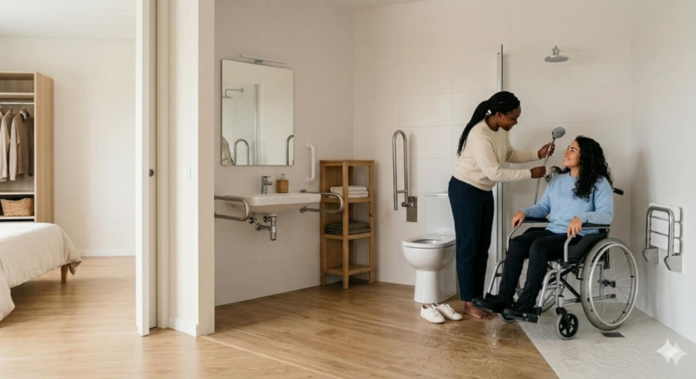
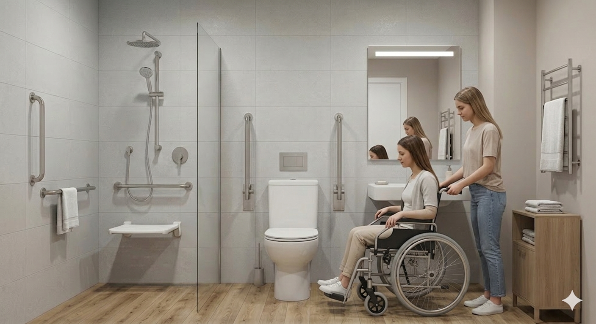
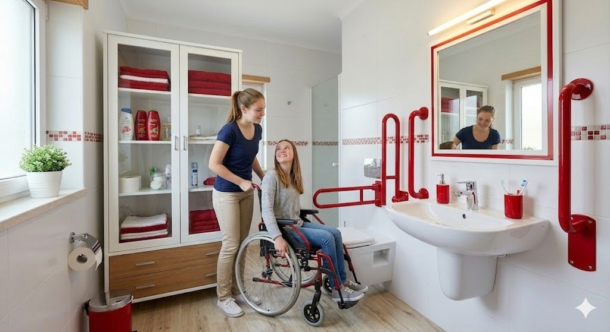
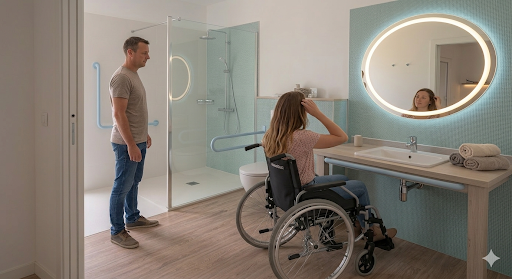
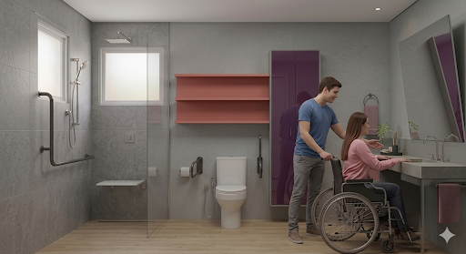
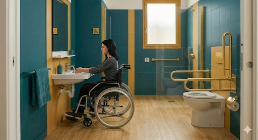

Casas de Banho Adaptadas
A segurança e a transferência são as palavras-chave para criar uma casa de banho verdadeiramente inclusiva.
Zona de Banho
Chuveiro ao nível do pavimento (sem degraus) com banco de apoio rebatível.
Sanitários
Sanitas suspensas ou com altura adaptada (45-50cm) e barras de apoio laterais.

Zonas Críticas e Estanquidade
A casa de banho exige atenção redobrada devido à combinação de água e sabão. As opções de pavimento devem garantir a máxima segurança contra quedas.
Duche "Walk-in" (Nível Zero)
O chão do duche deve ser a continuação do chão da casa de banho, com uma ligeira inclinação para o ralo. Pode usar cerâmica de pequeno formato (pastilha) apenas se as juntas forem seladas com betume epóxi. Caso contrário, opte por superfícies contínuas antiderrapantes.
Pavimento Vinílico Técnico
Para a casa de banho adaptada, o vinílico ideal é o técnico em rolo, obrigatoriamente colado, com propriedades antiderrapantes elevadas (R10/R11) e juntas soldadas. Só assim se garante uma casa de banho 100% estanque, segura contra quedas e totalmente acessível na zona do duche.

Casos Práticos




